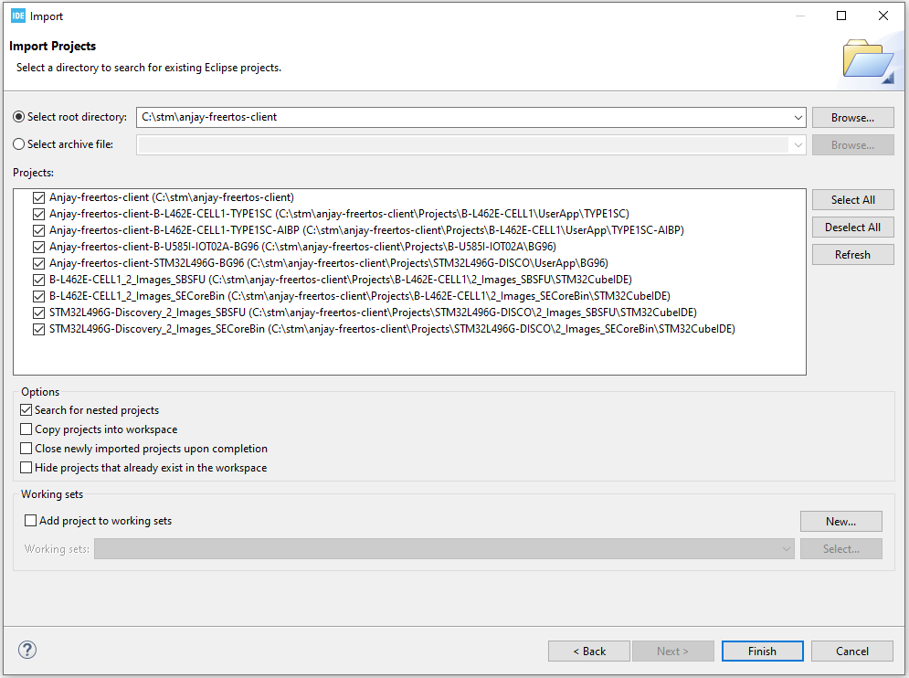
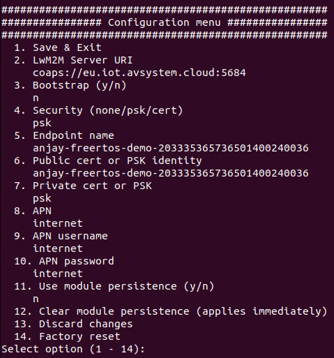

STM32L496G-DISCO/BG96#
Integrate your P-L496G-CELL02 Discovery kit board along with the default-provided Quectel BG96 modem.
Prerequisites#
- The STM32L496G-DISCO/BG96 board with a Micro-USB cable.
- Installed STM32CubeIDE.
- The serial communication program, such as minicom (for Linux) or RealTerm or PuTTY (for Windows) installed.
- A user with access to the Coiote IoT Device Management platform.
Prepare Anjay client application#
Use an already built binary#
To get the latest binary file and flash it to the board:
- Go to Anjay-freertos-client.
- Download the
Anjay-freertos-client-STM32L496G-BG96.binfile. - To flash the board, open your File manager and drag the downloaded
.binfile to your DIS_L496ZG external device. - You will see a blinking diode on your board. The diode will stop blinking as soon as the flashing is finished.
Start development using samples#
Note
This step is optional. If you've gone through the Use an already built binary step, you can go to Connect to the LwM2M Server right away.
Clone the Anjay freeRTOS client repository#
Enter the command line interface on your machine and run the following command:
git clone --recursive https://github.com/AVSystem/Anjay-freertos-client
Build binary and flash the board#
- Connect the STM32L496G-DISCO board to a USB port of your machine.
- Go to the STM32CubeIDE.
- Import the project cloned in the previous step to your workspace:
- From the navigation bar, select File and click Import.
- From the General list, select Existing Projects into Workspace and click Next.
- In Select root directory, indicate the catalog containing the cloned Anjay freeRTOS client repository.
- In the Projects field, select Anjay-freertos-client-STM32L496G-BG96 and click Finish. 
- In the Project Explorer, navigate to the Anjay-freertos-client-STM32L496G-BG96 project:
- Choose "Debug" configuration and build the project by right-clicking on the project name and selecting Build Project. The build should take less than one minute to complete.
- After the build is finished, right-click on the project name, select Run As and click the 1 STM32 Cortex-M C/C++ Application option.
- In the Lauch Configuration Selection, choose the Anjay-freertos-client-STM32L496G-BG96 option and click OK.
- After the build and run are complete, the board is flashed with compiled binary.
Connect to the LwM2M Server#
To connect to Coiote IoT Device Management platform, please register at https://eu.iot.avsystem.cloud.
Note
If you use the BG96-based configuration, you need to upgrade the modem firmware to at least the BG96MAR02A08M1G revision. Older versions may cause unexpected loss of connection.
To upgrade the firmware, download the following .zip files:
- Pack_BG96MAR02A08M1G_01.012.01.012,
- Quectel_LTE_Windows_USB_Driver_V2.0,
- QFlash_V4.10.
Then, follow a step-by-step instruction in Pack_BG96MAR02A08M1G_01.012.01.012. Mind that links from steps 2 and 4 of this instruction don't work correctly. For this reason you will need to use the downloaded Quectel_LTE_Windows_USB_Driver_V2.0 file for step 2 and QFlash_V4.10 file for step 4.
To connect the board:
- Log in to Coiote IoT DM and from the left side menu, select Device Inventory.
- In Device Inventory, click Add device.
- Select the Connect your LwM2M device directly via the Management server tile.

- In the Device credentials step:
- In the Device ID enter your board endpoint name, e.g.
test_device.
- In the Security mode section, select the PSK (Pre-Shared Key) mode:
- In the Key identity field, type the same name as in the
Endpoint namefield. - In the Key field, type the shared secret used in the device-server authentication.
- In the Key identity field, type the same name as in the
- In the Device ID enter your board endpoint name, e.g.
- Click the Add device button and Confirm in the confirmation pop-up.
- In the Connect your device step, follow the next section to run the client and connect it to the server.
- In the Device credentials step:
Configure the Client#
- With the board still connected to a serial port interface, open your serial communication program.
-
Press the reset button located on the board. This should trigger the following prompt:
Press any key in 3 seconds to enter config menu... -
Press any key and in the configuration menu, change the default credentials to your data by following the instructions presented in the program and save it. 
Important
APN (Access Point Name) is the name of a gateway between a GSM, GPRS, 3G and 4G mobile network and another computer network. If you use a built-in Truphone eSIM card, change the APN to iot.truphone.com.
Note
If you use external SIM card you have to check APN used by SIM card's provider.
-
Go to Coiote IoT DM to check if your device is connected. Click Next, then Go to Summary, then Finish. You will see your Device Center view:

Tip
LwM2M Server URI, endpoint name and other information can be found in the Configuration tab.
Anjay-freertos-client with FOTA (Firmware update Over the Air)#
Anjay application can be built in basic version (without FOTA) as described in the Build binary and flash the board section. In order to use FOTA, a few additional steps need to be done, e.g. Secure Boot and Secure Firmware Update compilation.
The X-CUBE-SBSFU Secure Boot and Secure Firmware Update solution allows the update of the STM32 microcontroller built-in program with new firmware versions, adding new features and correcting issues. The update process is performed in a secure way to prevent unauthorized updates and access to confidential on-device data such as code and firmware encryption key.
The Secure Boot (Root of Trust services) is immutable code, always executed after a system reset, that checks STM32 static protections, activates STM32 runtime protections and then verifies the authenticity and integrity of user application code before every execution in order to ensure that invalid or malicious code won't be run.
Additional prerequisites#
- STM32CubeProgrammer installed.
- Support for shell scripts execution (on Windows for example Git or Cygwin can be used).
- Python with the following modules:
pycryptodomex,ecdsa,numpy,pyelftools. - Import STM32L496G-Discovery_2_Images_SBSFU and STM32L496G-Discovery_2_Images_SECoreBin projects from previously cloned repository to workspace.
Prepare binary with SBSFU#
Important
You need to follow a strict compilation order presented below.
-
Compile SECoreBin application
This step is needed to create the Secure Engine core binary including all the trusted code and keys mapped inside the protected environment. The binary is linked with the SBSFU code in step 2. -
Compile SBSFU application
This step compiles the SBSFU source code implementing the state machine and configuring the protections. In addition, it links the code with the SECore binary generated at step 1 in order to generate a single SBSFU binary including the SE trusted code. -
Compile UserApp application (set Build configuration to Release)
It generates:- The user application binary file that is uploaded to the device using the Secure Firmware Update process
(Projects/STM32L496G-DISCO/UserApp/Binary/Anjay-freertos-client-STM32L496G-BG96.sfb). - A binary file concatenating the SBSFU binary, the user application binary in clear format, and the corresponding
FW header
(Projects/STM32L496G-DISCO/UserApp/Binary/SBSFU_Anjay-freertos-client-STM32L496G-BG96.bin).
Tip
You can set a custom firmware version in the
Application/Inc/default_config.hfile (usingFIRMWARE_VERSIONdefine). It will be useful when performing FOTA to distinguish the firmware images from each other. - The user application binary file that is uploaded to the device using the Secure Firmware Update process
Flash the board with SBSFU binary#
Use STM32CubeProgrammer application with SBSFU_Anjay-freertos-client-STM32L496G-BG96.bin file to program the board (it is advisable to perform Full chip erase first). You can open serial port to change default credentials in order to connect to Coiote IoT DM.
After that, you can use Coiote IoT DM to perform firmware update with Anjay-freertos-client-STM32L496G-BG96.sfb file.
Important
Disable Secure Protection
When flashed board with Secure Boot you will need to switch off secure protection to be able to flash the board again. To deactivate secure application please run STM32_Programmer_CLI (Program provided with STM32CubeProgrammer) tool with specific options:
./< path_to_STM32_Programmer_CLI > -c port=SWD mode=UR -ob RDP=0xBB -ob RDP=0xAA WRP1A_STRT=0xFF WRP1A_END=0x0 -ob displ
Perform firmware update#
In order to perform firmware update:
- Build the application and flash the board with
FIRMWARE_UPDATEdefine set to the proper version (see Prepare binary with SBSFU step), e.g.#define FIRMWARE_VERSION "v1.0" - Make changes to the code (optionally), set
FIRMWARE_UPDATEdefine to a different version, e.g.and build the application with a new firmware.#define FIRMWARE_VERSION "v2.0" - Upload the generated firmware file (
Anjay-freertos-client-STM32L496G-BG96.sfb) to Coiote IoT DM (go to Device management and selectFirmware update) and clickUpgrade. - After the FOTA finishes, the device will reboot and the following log should appear:
where
Firmware updated from version 'v1.0' to 'v2.0'v1.0andv2.0will be set to firmware versions you set earlier.